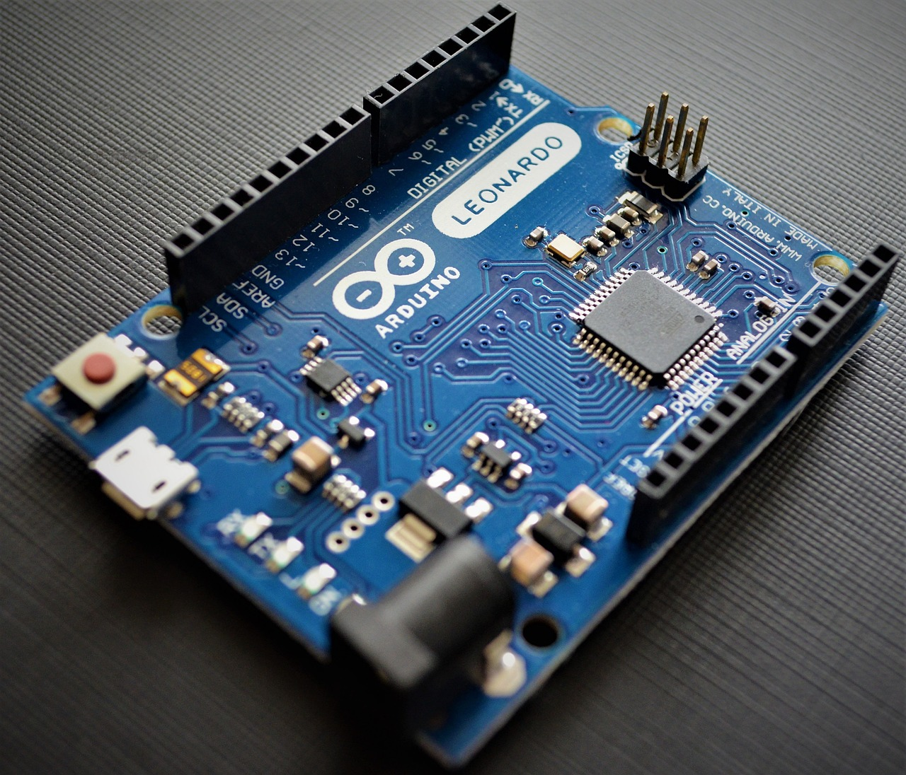
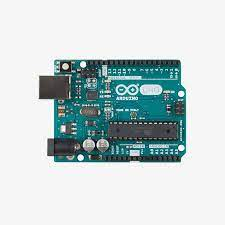

¿Que es la plataforma Arduino?
Arduino es una plataforma electrónica “open-source” o de código abierto cuyos principios son contar con software y hardware de fácil implementación. Lo que permite esta herramienta es la generación de infinidad de tipo de micro-ordenadores de una sola placa, que luego pueden tener una amplia variedad de usos según la necesidad de la persona que lo cree. Una forma sencilla de desarrollar proyectos para quien lo cree. Es idea para el ambito educativo como tambien el profesional.
¿Para que sirvé la plataforma Arduino?
Arduino se puede utilizar para desarrollar elementos autónomos, o conectarse a otros dispositivos que puedan interactuar con otros programas. Puede controlar un elemento, un ejemplo seria un motor que nos suba o baje una persiana basada en la luz que haya gracias a un sensor conectado al Arduino, o bien para transformar la información de una fuente, como puede ser un teclado, y convertir la información a algo que entienda, por ejemplo, un ordenador. La variedad de aplicaciones que nos proporciona Arduino es extensa y estara solamente limitado a la creatividad que desarrolle el ususario.
¿A que se debe su nombre
El nombre de la plataforma esta referido al Bar di Re Arduino en Italia, donde Massimo Banzi, uno de los fundadores, pasaba parte de su tiempo libre. Que también dicho nombre hace corresponde al Rey Arduino que gobernó en Italia entre los años 1002 y 1014.
